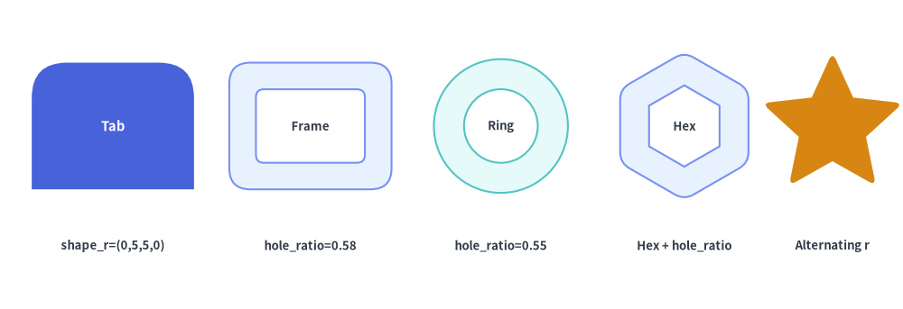

図形プリミティブ概要
drawlib.shapes モジュールは、6 つの意味的カテゴリに整理された 43 種類の宣言的ベクター図形プリミティブを提供します。すべての図形は Drawlib の Style システムとシームレスに統合されており、統一された塗りつぶし・枠線トークン、回転変換（style.angle）、角丸フィレット（style.shape_r）、中抜きカットアウト（hole_ratio）、および埋め込みタイポグラフィ（text と text_style）をサポートしています。

Source Code
from drawlib.canvas import save, setup
from drawlib.shapes import (
arrow,
arrow_arc,
arrow_u,
brace,
bubblespeech,
checkmark,
chevron,
circle,
clock,
cloud,
cube,
cylinder,
document,
ellipse,
explosion,
face,
fan,
forbidden,
funnel,
gear,
heart,
lightning,
math_symbol,
moon,
parallelogram,
pin,
plaque,
rectangle,
regularpolygon,
rhombus,
ribbon,
shield,
star,
sun,
tag,
trapezoid,
triangle,
wedge,
)
from drawlib.styles import Styles
from drawlib.text import text
setup(width=132, height=74)
card_st = Styles.Neutral.patch(shape_r=2.5)
hdr_st = Styles.DarkBold.patch(text_size=10.5)
sub_st = Styles.Dark.patch(text_size=9.5)
# 3x2 Category Grid
cols = [23, 66, 109]
rows = [55, 19]
for r_idx, cy in enumerate(rows):
for c_idx, cx in enumerate(cols):
st = Styles.PrimaryNeutral.patch(shape_r=2.5) if (r_idx == 0 and c_idx == 0) else card_st
rectangle((cx, cy), width=40, height=31, style=st)
# 1. Basic & Radial (6 shapes)
text((23, 66.5), "1. Basic & Radial (6)", style=hdr_st)
rectangle((10, 56), width=9, height=6.5, style=Styles.PrimaryFlat.patch(shape_r=1.5))
circle((21, 56), radius=3.5, style=Styles.SecondaryNeutral)
ellipse((32, 56), width=9, height=6, style=Styles.Neutral)
circle((11, 45.5), radius=3.5, hole_ratio=0.55, style=Styles.PrimaryFlat)
wedge((22, 45.5), radius=3.8, width=1.6, angle_start=20, angle_end=250, style=Styles.DarkBold)
fan((33, 43.0), radius=4.8, angle_start=30, angle_end=150, style=Styles.SecondaryNeutral)
# 2. Polygons & Custom (9 shapes)
text((66, 66.5), "2. Polygons & Custom (9)", style=hdr_st)
triangle((52, 56), width=7.5, height=6.5, style=Styles.PrimaryNeutral)
rhombus((61.5, 56), width=8.5, height=6.5, style=Styles.PrimaryFlat)
parallelogram((71, 56), width=8, height=6, corner_angle=68, style=Styles.SecondaryNeutral)
trapezoid((80.5, 56), height=6, bottomedge_width=8.5, topedge_width=5, style=Styles.Neutral)
regularpolygon((54, 45.5), num_vertex=6, radius=3.8, style=Styles.SecondaryNeutral)
star((65, 45.5), num_vertex=5, radius_ext=4.2, radius_int=2.0, style=Styles.WarningFlat)
plaque((77.5, 45.5), width=10, height=6.5, variant="concave", style=Styles.PrimaryNeutral)
# 3. Block Arrows & Chevrons (6 shapes)
text((109, 66.5), "3. Block Arrows (6)", style=hdr_st)
arrow((93, 56.5), (107, 56.5), tail_width=2.8, head_width=6.0, head_length=4.2, style=Styles.PrimaryFlat)
chevron((118, 56.5), width=11, height=6.0, corner_angle=60, style=Styles.SecondaryNeutral)
arrow_u((99, 45.5), width=10, height=7.0, tail_width=2.0, head_width=4.8, head_length=3.5, style=Styles.DarkBold.patch(shape_r=2))
arrow_arc((117, 46.5), width=11, height=7.5, tail_width=2.0, head_width=4.8, head_angle=16, angle_start=180, angle_end=0, style=Styles.PrimaryNeutral)
# 4. 3D Containers & Grouping (6 shapes)
text((23, 30.5), "4. 3D Containers & Flow (6)", style=hdr_st)
cylinder((10.5, 20), width=7.5, height=9.0, disks=2, style=Styles.PrimaryFlat)
cube((21, 20), width=8.5, height=8.5, style=Styles.PrimaryNeutral)
document((31.5, 20), width=7.5, height=8.5, variant="folded_wave", style=Styles.SecondaryNeutral)
funnel((12, 9.5), width=8.5, height=7.5, variant="3d", style=Styles.Neutral)
cloud((24, 9.5), width=11, height=7.0, variant="flat", style=Styles.PrimaryNeutral)
brace((35.5, 9.5), width=2.8, height=8.5, symbol="}", style=Styles.PrimaryBold.patch(line_width=2.0))
# 5. Callouts, Badges & Status (8 shapes)
text((66, 30.5), "5. Callouts & Badges (8)", style=hdr_st)
bubblespeech((49, 17.5), width=9.5, height=5.5, tail_edge="bottom", tail_start_ratio=0.3, tail_end_ratio=0.6, tail_vertex_xy=(52, 15.0), style=Styles.PrimaryNeutral)
pin((63.5, 20), width=6.0, height=8.5, variant="teardrop", hole_ratio=0.35, style=Styles.DangerFlat)
tag((73, 20), width=9.5, height=5.8, variant="angled", style=Styles.SecondaryNeutral)
shield((82, 20), width=6.8, height=8.0, variant="classic", style=Styles.PrimaryFlat)
ribbon((53.5, 9.5), width=11.5, height=5.5, variant="down", style=Styles.PrimaryNeutral)
forbidden((65.0, 9.5), radius=3.4, variant="slash", style=Styles.DangerFlat)
checkmark((72.8, 9.5), width=6.6, variant="circle", style=Styles.SuccessFlat)
explosion((80.2, 9.5), width=6.8, height=6.2, variant="irregular", style=Styles.WarningFlat)
# 6. Faces, Clocks & Symbols (8 shapes)
text((109, 30.5), "6. Faces, Clocks & Symbols (8)", style=hdr_st)
face((95, 20), radius=3.8, variant="smile", style=Styles.PrimaryFlat)
clock((104.5, 20), radius=3.8, variant="ticks", hour=10, minute=10, style=Styles.Neutral)
sun((114, 20), radius=3.8, variant="rays", style=Styles.WarningFlat)
moon((122.5, 20), width=6.0, height=7.0, variant="crescent", style=Styles.SecondaryNeutral)
heart((95, 9.5), width=7.2, height=6.5, variant="standard", style=Styles.DangerNeutral)
lightning((104.5, 9.5), width=5.2, height=8.0, variant="standard", style=Styles.WarningFlat)
gear((114, 9.5), num_teeth=8, radius_ext=4.0, radius_int=3.0, hole_radius=1.3, style=Styles.PrimaryNeutral)
math_symbol((122.5, 9.5), symbol="+", width=6.0, style=Styles.PrimaryFlat.patch(shape_r=0.4))
save()
1. drawlib.shapes の 6 つの意味的カテゴリ
全 43 個の関数はすべて drawlib.shapes から直接再エクスポートされており（from drawlib.shapes import rectangle, circle, ...）、以下の 6 つのカテゴリ別ガイドで詳しく解説されています。
| カテゴリガイド | 関数数 | 含まれる図形関数 | 主なアーキテクチャ・図解用途 |
|---|---|---|---|
| 1. 基本図形・放射状図形 | 6 | rectangle, circle, ellipse, wedge, fan, arc |
サービスカード、角丸コンテナ、ノード、中抜きドーナツリング、扇形セクター、視野角（FOV）コーン、軌道アーク。 |
| 2. 多角形とカスタムパス | 9 | triangle, parallelogram, trapezoid, rhombus, regularpolygon, star, plaque, polygon, shape |
条件分岐ひし形、入出力平行四辺形、プーリング層、六角形ポッド、星形、認定プラーク、カスタムベジェパス。 |
| 3. ブロック矢印・シェブロン | 6 | arrow, arrow_l, arrow_u, arrow_arc, arrow_polyline, chevron |
太い 2D データフローパイプライン、連続工程シェブロン、90° L 字ターン、180° U ターンリトライ、循環フロー、多関節ルート。 |
| 4. 3D コンテナ・フロー・グルーピング | 6 | cylinder, cube, document, funnel, cloud, brace |
マルチディスク DB、3D コンピュートブロック、積層ドキュメント・ログ、ETL フィルタリングファネル、クラウド/VPC 境界、波括弧・角括弧・丸括弧によるグルーピング。 |
| 5. 吹き出し・バッジ・ステータス | 8 | bubblespeech, pin, tag, ribbon, shield, forbidden, checkmark, explosion |
吹き出し注釈、マップ/ポインタピン、Git リリースタグ、マイルストーンリボン、WAF/IAM シールド、許可/拒否ゲート、アラート爆発マーク。 |
| 6. フェイス・時計・記号・演算子 | 8 | face, clock, sun, moon, heart, lightning, gear, math_symbol |
ユーザー/脅威ペルソナ、アナログ時計・7 セグメントデジタル時計、昼夜スケジュール、ヘルスチェック、サーバーレストリガー、ワーカー歯車、視覚的数式表現。 |
アルファベット順関数リファレンス (A–Z)
各図形関数のカテゴリガイド、基準座標（アンカー）、および対応している修飾パラメータを一覧で確認できる早見表です。
| 関数 | カテゴリガイド | 基準座標 xy |
hole_ratio |
style.shape_r |
text 対応 |
主なバリアント・パラメータ |
|---|---|---|---|---|---|---|
arc |
基本・放射状 | 中心 (cx, cy) |
— | — | 対応 | width, height, angle_start, angle_end |
arrow |
ブロック矢印 | xy1 -> xy2 |
— | — | 対応（自動回転） | tail_width, head_width, head_length, head |
arrow_arc |
ブロック矢印 | 中心 (cx, cy) |
— | — | 非対応（text()） |
width, height, head_angle, angle_start, angle_end |
arrow_l |
ブロック矢印 | 中心 (cx, cy) |
— | 屈曲部 float | (r,) |
非対応（text()） |
width, height, tail_width, head_width, head_length |
arrow_polyline |
ブロック矢印 | xys リスト |
— | 関節部 float | tuple |
非対応（text()） |
xys, tail_width, head_width, head_length, head |
arrow_u |
ブロック矢印 | 中心 (cx, cy) |
— | 折返し部 float | (r1, r2) |
非対応（text()） |
width, height, tail_width, head_width, head_length |
brace |
3D コンテナ | 中心 (cx, cy) |
— | 角括弧 [] の角 |
対応 | symbol ("{}", "[]", "()"), direction, tip_ratio |
bubblespeech |
吹き出し・バッジ | 左下 (x0, y0) |
— | — | 対応 | tail_edge, tail_start_ratio, tail_end_ratio, tail_vertex_xy |
checkmark |
吹き出し・バッジ | 中心 (cx, cy) |
— | チェック角 (float) |
対応 | variant ("standard", "circle", "solid_circle"), thickness_ratio |
chevron |
ブロック矢印 | 中心 (cx, cy) |
— | float | 6要素タプル |
対応 | width, height, corner_angle, mirror |
circle |
基本・放射状 | 中心 (cx, cy) |
対応 (0, 1) |
— | 対応 | radius, hole_ratio |
clock |
フェイス・記号 | 中心 (cx, cy) |
— | — | 対応 | variant ("standard", "ticks", "alarm", "stopwatch", "digital"), hour, minute |
cloud |
3D コンテナ | 中心 (cx, cy) |
— | — | 対応 | variant ("standard", "flat", "fluffy", "simple"), bump_ratio |
cube |
3D コンテナ | 中心 (cx, cy) |
— | — | 対応（前面） | width, height, depth_ratio |
cylinder |
3D コンテナ | 中心 (cx, cy) |
— | — | 対応 | width, height, disks |
document |
3D コンテナ | 中心 (cx, cy) |
— | — | 対応（最前面シート） | variant ("wave", "folded", "double_wave", "folded_wave"), stacked |
ellipse |
基本・放射状 | 中心 (cx, cy) |
対応 (0, 1) |
— | 対応 | width, height, hole_ratio |
explosion |
吹き出し・バッジ | 中心 (cx, cy) |
— | float | tuple |
対応 | variant ("standard", "irregular", "heavy", "wild", "curved", "comic") |
face |
フェイス・記号 | 中心 (cx, cy) |
— | — | 対応 | variant ("smile", "neutral", "surprised", "sad", "angry", "dizzy", "dead", "skull", "devil") |
fan |
基本・放射状 | 中心 (cx, cy) |
— | — | 対応 | radius, angle_start, angle_end |
forbidden |
吹き出し・バッジ | 中心 (cx, cy) |
— | — | 対応 | variant ("slash", "backslash", "cross", "no_entry"), thickness_ratio |
funnel |
3D コンテナ | 中心 (cx, cy) |
— | — | 対応 | variant ("standard", "3d", "curved"), neck_width_ratio, neck_height_ratio |
gear |
フェイス・記号 | 中心 (cx, cy) |
hole_radius |
float | (4N)要素タプル |
対応 | num_teeth, radius_ext, radius_int, tooth_ext_ratio, tooth_int_ratio |
heart |
フェイス・記号 | 中心 (cx, cy) |
— | — | 対応（視覚補正） | variant ("standard", "broken") |
lightning |
フェイス・記号 | 中心 (cx, cy) |
— | float | tuple |
対応 | variant ("standard", "flat", "double", "flat_double", "angled", "slanted"), mirror |
math_symbol |
フェイス・記号 | 中心 (cx, cy) |
— | float |
対応 | symbol ("+", "-", "×", "÷", "=", "≠"), thickness_ratio |
moon |
フェイス・記号 | 中心 (cx, cy) |
— | — | 対応（視覚補正） | variant ("crescent", "thin", "waxing", "half"), mirror |
parallelogram |
多角形・カスタム | 中心 (cx, cy) |
対応 (0, 1) |
float | 4要素タプル |
対応 | width, height, corner_angle |
pin |
吹き出し・バッジ | 中心 (cx, cy) |
対応 (0, 0.8) |
— | 対応（ヘッド中央） | variant ("pointer", "teardrop", "pin"), hole_ratio |
plaque |
多角形・カスタム | 中心 (cx, cy) |
— | float | tuple |
対応 | variant ("concave", "chamfered", "notched"), cut_ratio |
polygon |
多角形・カスタム | xys リスト |
— | float | N要素タプル |
対応（外接枠中央） | xys=[(x1, y1), (x2, y2), ...] |
rectangle |
基本・放射状 | 中心 (cx, cy) |
対応 (0, 1) |
float | 4要素タプル |
対応 | width, height, hole_ratio |
regularpolygon |
多角形・カスタム | 中心 (cx, cy) |
対応 (0, 1) |
float | N要素タプル |
対応 | num_vertex, radius, hole_ratio |
rhombus |
多角形・カスタム | 中心 (cx, cy) |
対応 (0, 1) |
float | 4要素タプル |
対応 | width, height, hole_ratio |
ribbon |
吹き出し・バッジ | 中心 (cx, cy) |
— | — | 対応（前面バナー） | variant ("down", "up", "flat"), tail_width_ratio, drop_ratio |
shape |
多角形・カスタム | 中心 (cx, cy) |
— | — | 対応 | path_points（直線、2 次・3 次ベジェ曲線）, is_default_center |
shield |
吹き出し・バッジ | 中心 (cx, cy) |
— | — | 対応（視覚補正） | variant ("classic", "flat", "round") |
star |
多角形・カスタム | 中心 (cx, cy) |
— | float | (2N)要素タプル |
対応 | num_vertex, radius_ext, radius_int |
sun |
フェイス・記号 | 中心 (cx, cy) |
— | — | 対応 | variant ("rays", "ring", "beams"), num_rays |
tag |
吹き出し・バッジ | 中心 (cx, cy) |
対応 (0, 0.7) |
float | tuple |
対応（視覚補正） | variant ("angled", "chamfered", "rounded"), mirror, hole_ratio |
trapezoid |
多角形・カスタム | 中心 (cx, cy) |
対応 (0, 1) |
float | 4要素タプル |
対応 | height, bottomedge_width, topedge_width, topedge_x |
triangle |
多角形・カスタム | 中心 (cx, cy) |
対応 (0, 1) |
float | 3要素タプル |
対応 | width, height, topvertex_x |
wedge |
基本・放射状 | 中心 (cx, cy) |
— | — | 対応 | radius, width, angle_start, angle_end |
2. 基準座標（アンカー）とアライメント (xy, halign, valign)
デカルト座標キャンバス（(0, 0) が左下隅）において、xy が図形のどの位置を基準（アンカー）にするかを理解しておくことは、正確なレイアウトを行う上で不可欠です。
- デフォルトの中心基準配置 (
halign="center", valign="center"): すべての組み込みプリセットスタイル（Styles.Neutral,Styles.PrimaryFlatなど）にはhalign="center"とvalign="center"が設定されています。全 43 個の図形関数のうち 39 個では、xy=(cx, cy)を渡すと、回転前のバウンディングボックス（または外接円）の幾何学的な中心が正確に(cx, cy)に配置されます。 - バウンディングボックスのアライメント変更 (
style.patch(halign=..., valign=...)): バウンディングボックス型の図形（rectangle,ellipse,triangle,parallelogram,trapezoid,rhombus,plaque,chevron,cylinder,cube,document,funnel,cloud,brace,pin,tag,ribbon,shield,checkmark,explosion,moon,heart,lightning,math_symbol,shape）では、halign（"left","center","right"）およびvalign（"bottom","center","top"）を上書きすることで、特定の角や辺をxyの基準点にすることができます。 - 特殊なアンカーを持つ図形 (
bubblespeech,arrow,polygon,arrow_polyline):bubblespeech(xy, ...): アライメント変換によってtail_vertex_xyの指し示すターゲット座標がずれないよう、xyは常に吹き出し本体の矩形の左下隅(x0, y0)として解釈されます。arrow(xy1, xy2, ...): 始点（テール）座標xy1と矢印先端（ヘッド）座標xy2によって直接定義されます。polygon(xys, ...)およびarrow_polyline(xys, ...): キャンバス上の明示的な頂点リストxys=[(x1, y1), (x2, y2), ...]によって直接定義されます。
from drawlib.canvas import save, setup
from drawlib.lines import line
from drawlib.shapes import circle, rectangle
from drawlib.styles import Styles
from drawlib.text import text
setup(width=126, height=46)
lbl = Styles.DarkBold.patch(text_size=10.0)
red_dot = Styles.DangerFlat
# 1. Default Preset Style: halign="center", valign="center"
pt1 = (22, 25)
rectangle(
pt1,
width=28,
height=18,
style=Styles.PrimaryNeutral.patch(shape_r=2),
text="Default\n(center, center)",
text_style=lbl.patch(xy_shift=(0, 4.2)),
)
circle(pt1, radius=1.2, style=red_dot)
text((22, 9), "xy=(22, 25) at Center", style=lbl)
# 2. Bottom-Left Anchor: halign="left", valign="bottom"
pt2 = (50, 16)
rectangle(
pt2,
width=28,
height=18,
style=Styles.SecondaryNeutral.patch(shape_r=2, halign="left", valign="bottom"),
text='halign="left"\nvalign="bottom"',
text_style=lbl,
)
circle(pt2, radius=1.2, style=red_dot)
text((64, 9), "xy=(50, 16) at Bottom-Left", style=lbl)
# 3. Rotation around Center: style.patch(angle=20)
pt3 = (104, 25)
line((88, 25), (120, 25), style=Styles.MutedDashed)
rectangle(
pt3,
width=28,
height=16,
style=Styles.PrimaryFlat.patch(shape_r=2.5, angle=20),
text="angle=20°",
text_style=Styles.WhiteBold.patch(text_size=10.5, xy_shift=(0, 3.8)),
)
circle(pt3, radius=1.2, style=red_dot)
text((104, 9), "Rotated Around xy", style=lbl)
save()

3. 共通のジオメトリ修飾パラメータ (shape_r, hole_ratio, mirror)
3.1. 角丸・頂点フィレット (style.shape_r)
多くの多角形プリミティブおよびバッジ系プリミティブは、style.shape_r を参照して鋭角の頂点を滑らかな円弧状に丸めます。
- 均等な角丸 (
shape_r=3.0): 単一のfloatを渡すと、図形のすべての頂点が同じ半径で丸められます。 - 頂点ごとの個別角丸 (
shape_r=(r1, r2, ...)):floatのタプルを渡すと、各頂点に対して順番に個別の角丸半径を割り当てます（0を指定した頂点は鋭角のまま維持されます）。rectangle: 4 要素タプル(bottom_left, top_left, top_right, bottom_right)（左下、左上、右上、右下）。triangle: 3 要素タプル(bottom_left, top_apex, bottom_right)（左下、上頂点、右下）。parallelogram,trapezoid,rhombus: 左下から始まる 4 要素タプル（rhombusは左頂点から開始）。regularpolygon: 上頂点から始まり反時計回りに進むN要素タプル。star: 外側頂点と内側谷が交互に並ぶ(2 * N)要素タプル(outer_tip_0, inner_valley_0, outer_tip_1, inner_valley_1, ...)。arrow_u: 2 要素タプル(first_turn_r, second_turn_r)（第 1 コーナー、第 2 コーナー）。arrow_polyline: 折れ線の各中間関節に対応する(len(xys) - 2)要素タプル。
3.2. 中抜きカットアウト (hole_ratio)
hole_ratio を指定すると、単一の複合ベクターパス（Path.make_compound_path）を用いて透明な内側の中抜き領域を生成します。そのため、穴の向こう側にある背景グリッドや背面要素がそのまま透けて見えます。
- 同心フレーム・リング状カットアウト (
0.0 < hole_ratio < 1.0):rectangle,circle,ellipse,triangle,parallelogram,trapezoid,rhombus,regularpolygonでサポートされています。角丸多角形（shape_r > 0）では、外周輪郭と内側の中抜き輪郭の両方が滑らかに丸められます。 - バッジのパンチ穴:
pin（0.0 < hole_ratio < 0.8）およびtag（0.0 < hole_ratio < 0.7）でサポートされており、ピンのヘッド部やタグの首元に円形の取り付け穴を空けることができます。
from drawlib.canvas import save, setup
from drawlib.shapes import circle, rectangle, regularpolygon, rhombus, star
from drawlib.styles import Styles
from drawlib.text import text
setup(width=128, height=44)
lbl = Styles.DarkBold.patch(text_size=9.5)
# 1. Per-corner rounded rectangle tab
rectangle(
(16, 26),
width=23,
height=18,
style=Styles.PrimaryFlat.patch(shape_r=(0, 5, 5, 0)),
text="Tab",
text_style=Styles.WhiteBold.patch(text_size=10.5),
)
text((16, 9), "shape_r=(0,5,5,0)", style=lbl)
# 2. Hollow rounded rectangle frame
rectangle(
(44, 26),
width=23,
height=18,
hole_ratio=0.58,
style=Styles.PrimaryNeutral.patch(shape_r=3),
text="Frame",
text_style=lbl,
)
text((44, 9), "hole_ratio=0.58", style=lbl)
# 3. Hollow circular ring
circle(
(71, 26),
radius=9.5,
hole_ratio=0.55,
style=Styles.SecondaryNeutral,
text="Ring",
text_style=lbl,
)
text((71, 9), "hole_ratio=0.55", style=lbl)
# 4. Hollow rounded hexagon
regularpolygon(
(97, 26),
num_vertex=6,
radius=10.5,
hole_ratio=0.55,
style=Styles.PrimaryNeutral.patch(shape_r=1.5),
text="Hex",
text_style=lbl,
)
text((97, 9), "Hex + hole_ratio", style=lbl)
# 5. Per-vertex star (rounded tips, sharp valleys)
star(
(118, 26),
num_vertex=5,
radius_ext=10.5,
radius_int=5.0,
style=Styles.WarningFlat.patch(shape_r=(1.2, 0) * 5),
)
text((118, 9), "Alternating r", style=lbl)
save()

4. 埋め込みテキストラベルと視覚的中心補正 (text, text_style)
ほぼすべての図形（43 種のうち arrow_l, arrow_u, arrow_arc, arrow_polyline を除く 39 種）は、text: str = "" と text_style: Style | None = None を受け取ります。
- 回転角の自動継承: 図形に
style.angleが設定されている場合、text_style=Styles.DarkBold.patch(angle=0)で明示的に上書きしない限り、埋め込まれたtextも同じ角度で自動的に回転します。 - 3D 図形・非対称図形における視覚的中心補正（オプティカルセンタリング）:
cube: 3D の上面・側面の斜め境界線とラベルが重ならないよう、前面の矩形フェイスの中央にtextを配置します。document: 最前面のシートの中央にtextを配置し、下端の波形くぼみや右上の折り返し（ドッグイヤー）を避けるよう位置を補正します。pin,shield,heart,moon,ribbon,tag: 視覚的に最も広い本体領域（例:pinの円形ヘッド部やribbonの前面バナー部）へデフォルトのテキスト基準位置を自動的にシフトします。
- ラベル位置の微調整 (
text_style.xy_shift):text_styleにxy_shift=(dx, dy)を指定すると、図形の中心を基準にラベル位置を微調整できます（style.angleが 0 以外の場合、シフトベクトルも図形と一緒に回転します）。
from drawlib.canvas import save, setup
from drawlib.shapes import cube, document, pin, ribbon, triangle
from drawlib.styles import Styles
from drawlib.text import text
setup(width=128, height=46)
lbl_cap = Styles.DarkBold.patch(text_size=9.5)
# 1. Cube: auto-centered on front face
cube(
(16, 27),
width=21,
height=20,
depth_ratio=0.28,
style=Styles.PrimaryFlat,
text="Front\nFace",
text_style=Styles.WhiteBold.patch(text_size=10.0),
)
text((16, 9), "cube (front face)", style=lbl_cap)
# 2. Stacked Document: auto-centered on front sheet
document(
(43, 27),
width=21,
height=21,
variant="folded_wave",
stacked=3,
style=Styles.SecondaryNeutral,
text="Front\nSheet",
text_style=Styles.DarkBold.patch(text_size=9.5),
)
text((43, 9), "document (stacked=3)", style=lbl_cap)
# 3. Pin: auto-centered in circular head
pin(
(68, 27),
width=16,
height=22,
variant="pointer",
style=Styles.PrimaryNeutral,
text="A1",
text_style=Styles.DarkBold.patch(text_size=10.5),
)
text((68, 9), "pin (head center)", style=lbl_cap)
# 4. Ribbon: auto-centered on raised front banner
ribbon(
(94, 27),
width=26,
height=15,
variant="down",
style=Styles.PrimaryFlat,
text="STAGE 1",
text_style=Styles.WhiteBold.patch(text_size=9.5),
)
text((94, 9), "ribbon (front bar)", style=lbl_cap)
# 5. Triangle with manual xy_shift=(0, -3) toward wider base
triangle(
(118, 27),
width=18,
height=19,
style=Styles.Neutral,
text="Base",
text_style=Styles.DarkBold.patch(text_size=10.0, xy_shift=(0, -3.0)),
)
text((118, 9), "xy_shift=(0, -3)", style=lbl_cap)
save()